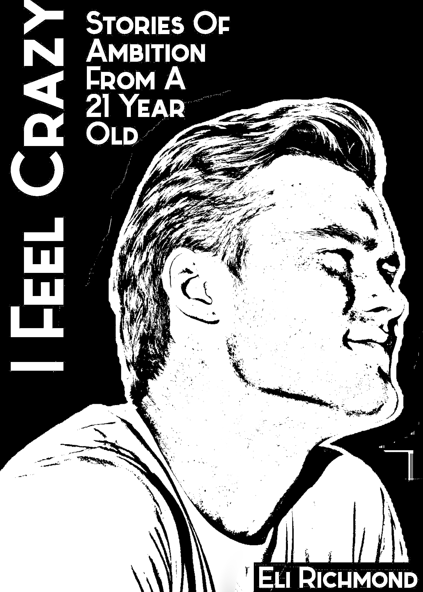

I Feel Crazy
Hey. If you don't already know me, I'm Eli, just an ambitious 21-year-old. This book is everything that has happened so far – well, not everything. If we sat down in a coffee shop, and you asked me to tell you my entire life story, what I've written is probably something very similar to what we would talk about.
Do you remember as a child trying to race in one of those inflatable obstacle courses where, about halfway through, you have to climb the slide using the foam-stepped rock wall while your opponent, if you're ahead, tries to yank your footing loose? For ambitious people, life often feels like that. The work is hard, of course, but the hardest part for me has been pushing back against convention, which desperatly wants to guide all of us into a very specific and normal life. This theme runs through most of these stories, and I reflect on this near the end of the book.
I hope these humble beginnings will one day inspire others in the same way other people's stories have inspired me in these first 21 years. Enjoy :)